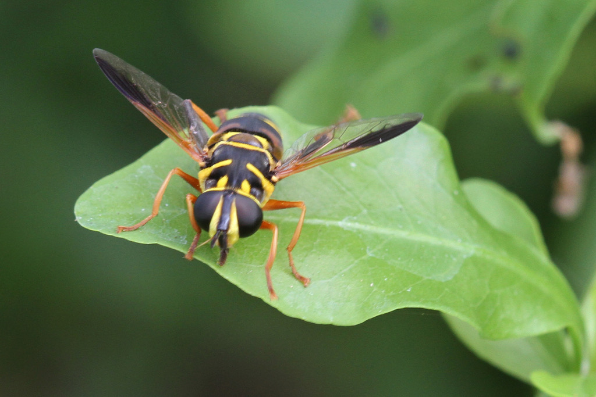

- The Carolinian Elegant looks convincingly like a wasp or bee — bold black-and-yellow patterning, a narrow waist, the works. It is a fly, entirely harmless, and cannot sting. The resemblance is a trick aimed squarely at predators that would rather not find out the hard way.
- Adults can hang in mid-air with almost no visible effort, locked in one spot while their wings beat too fast to see. That hovering ability is the namesake of the whole hoverfly family.
- While the adults grace our wildflowers, their larvae are busy behind the scenes, living in the water-filled rot holes of the park's mature trees — breathing through a long tail-like siphon that pokes above the surface and earning young hoverflies of this type the name 'rat-tailed maggots.'
- At 13 to 18 mm, this is one of the larger hoverfly species in the eastern United States, comparable in size to a small yellowjacket — which, of course, is precisely the point.
A large hoverfly: 13 to 18 mm (roughly half to three-quarters of an inch) in body length, making it noticeably bigger than most flower flies and comparable in bulk to a small yellowjacket.
Black and yellow throughout, with vivid golden-yellow markings on a shining black thorax and a black-and-yellow banded abdomen. The pattern and proportions are a convincing yellowjacket, paper-wasp, or bee mimic.
Shining black with vivid golden-yellow markings, including paired oval spots near the front corners (shoulders) of the thorax and a transverse yellow line along the lateral suture. Two black stripes run along the top of the scutum. The scutellum is brownish with a yellowish rear border.
Black and yellow: the first segment is black with paired oval yellow spots near the rear; the second segment is black with a narrow posterior yellow margin. Subsequent segments continue the banded pattern.
Face is yellowish-red with whitish pollen and bright yellow pile on the sides; a broad dark median stripe and shining black cheeks are present. Antennae are reddish-brown.
A single pair of wings — the key structural clue that separates any hoverfly from a true wasp or bee. A faint dark mark is visible on the wing surface.
Essentially silent as perceived by visitors. The wings produce an audible buzz in flight, which is one element of the wasp mimicry — but there are no calls or vocalizations at any life stage.
Look for a large, yellow-and-black insect that your eye will want to call a wasp or bee — then count the wings. True wasps carry two pairs of wings; as a fly, the Carolinian Elegant operates with just one pair — yet moves with a precision most wasps could only dream of. On the Carolinian Elegant, the thorax carries vivid golden-yellow spots and lines on a polished black background, and the abdomen is banded black and yellow in a pattern that tightens the impersonation. The large, wrap-around compound eyes are the easiest giveaway once you look for them — wasps and bees have narrower, side-mounted eyes by comparison. Adults are usually solitary and are most likely encountered hovering near flowers or at rest on a leaf in a sunny patch.
Adults feed on nectar and pollen collected from flowers. Larvae are aquatic filter-feeders, consuming decaying organic matter in the water-filled rot holes of trees.
Scan flowering plants in open or sunny parts of the park, particularly where woodland meets a clearing. Because the species is uncommon and typically solitary, you are more likely to encounter a single individual hovering at flowers than a group. Also check sunny leaves and low branches at forest edges, where adults sometimes bask or rest between foraging bouts.
Warm-season activity, with adults most likely present from late spring through early fall when temperatures support insect flight and flowers are abundant. Midday hours on warm, sunny days offer the best chance of an encounter.
Observe as closely as you like. Adults foraging on flowers are often tolerant of a careful approach. No handling is needed or recommended — simply watching is rewarding and enough to appreciate the mimicry.
- © celestes (CC-BY-NC), via iNaturalist